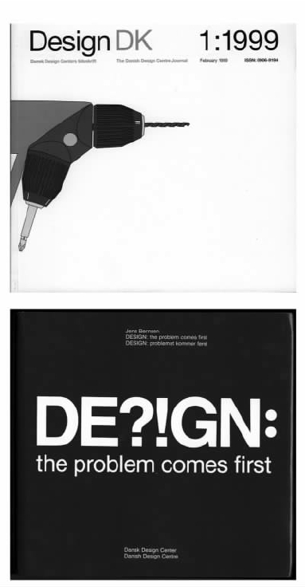

从广义上来说，来自三个语境的影响与设计实践有关，这些领域分别是：专业设计机构，或设计师看待自己的方式；大部分的设计实践所处的商业语境；此外，还有国家政策。每个国家的政策都不同，但是在很多地方，国家政策是一个非常重要的因素。
上文里我们曾提到过一个事实，那就是设计从未作为一个主要职业发展过，它并不像建筑、法律或医学那样有自律的权利，可以控制准入和实践的级别。设计活动确实千变万化，其作品丰富多样。因此，设计是否应该以职业为基础来建构，这样的建构能否成功，实在令人怀疑。
尽管如此，许多国家已经建立了专业的设计团体，它们能提供专业化的服务，或按设计能力进行综合分类，这一切都表现出了设计师给政府、工业、新闻界和公众带来的影响。同时，这样的团体也为从业者开辟了一个讨论相关事务的论坛。这些团体中有些（如美国工业设计者协会或美国图形研究协会）进行的是专项设计，而有些团体（如英国特许设计师协会）的设计方向则比较多元。它们中间也有国际机构，可以承办国际会议，解决跨国界的设计问题。
设计机构可就它们如何看待自己的作品发表声明，也可对实践活动的标准提出建议。但事实上，在这类问题上并不是设计师一个人说了算的。设计师出于个人兴趣爱好进行的个人试验和探索，是维持其创作动机所必需的。除此之外，绝大部分设计师很少为自己工作或者独立作业。他们为客户或雇主工作，所以商贸背景必须被当作设计活动展开的主要舞台。最终，设计活动中哪些可以被接受、哪些可行或者哪些令人满意，主要由客户或者雇主来决定。因此商业政策和活动成了了解设计在操作方面的运行方式、设计能够产生的作用及其功能的基础。
由于有关设计在公司整体策略上所起作用的详细说明相对较少，所以，在利用商业方法对设计进行分析时会存在很多问题。在企业的上下级关系中，将设计作为领导者来定位，这样的做法同样是不合适的。因为，我们可以发现设计以大量不同的形式存在于企业中。比如，设计可以是一个独立的职能部门，也可以隶属于工程部、销售管理部或研发部。
在很大程度上，设计实际的运行方式取决于不同机构内的固有方法。同时，它更多地依赖于个性和习惯性行为的倾向。然而，正是由于这些差异，我们才能对一些基本模式加以区分。
在组织机构方面，设计可以是中枢职能部门，也可能被分散到机构的各个部门。众所周知，类似于IBM那样的公司，长期以来对于生产什么样的产品、如何进行市场营销都有严格的集中控制。相反，如日本电器巨头松下电器公司这样的集团企业，会将权力下放到各个具体产品的生产部门，如电视机、录像机或家用电器等部门。
有些公司的设计很明显地分为长期解决方案或短期解决方案。在汽车行业，德国梅塞德斯公司注重长期的解决方案，坚信由它生产出来的汽车，不论过了多久，都易于识别。在设计上，梅塞德斯公司进行了集中化的控制，主张每一款新的汽车模型都要保持梅塞德斯品牌的一贯风格，确保它的可识别性。与之相反，通用汽车公司采取的则是短期革新的策略。公司将设计的责任移交到不同品牌（如雪佛莱、别克和凯迪拉克）的生产部门。通过每年设计、更新汽车模型，公司将重点放在不断的变异求新上。在众多公司联合组成集团化企业的情况下，不仅是产品决策而且就连设计活动也常常被移交到下属各个组成部门，吉列公司就是一个典型的例子。公司除了主打产品化妆品以外，还拥有专门生产牙齿护理用品的欧乐B公司、专门生产电器产品的博朗公司，以及派克制笔公司。
在服务机构、航空、银行等领域以及特许权经营公司，如快餐和石油公司里，尽管各个销售网点的经营者不同，设计都是它们保持公司形象和协调统一标准的主要手段之一。类似于麦当劳这样的公司无法对散布于全球的所有特许经营点的各个方面都进行日常管理。但是，通过设计，在食物本身以及食品烹制、递送和环境布置等问题上都形成了系统化的方法。设计在建立和维持公司基本标准上起到了关键的作用。
如果设计在机构内起到的整体作用是如此多样，而可辨的基本模式又是如此之少，那么我们可以推测，设计在具体操作管理层面上会更加混乱。即使是在一些特殊的产品部门，公司在为同样的市场生产类似的产品时，仍然会产生大量的差异。
很明显，各个机构特定的历史以及设计师的个性，对于理解设计在他们各自活动中所扮演的角色都起到了至关重要的作用。有些公司最初靠企业家对于市场机遇的洞见而建立起来，有些公司的创建则是源于特别的技术创新。也有极个别的创建人是出于一种社会责任心。甚至还有些设计师，为了保持他们作品的实质面貌，成立了自己的公司。有些公司已经建立了正规程序，能保持长时间运作的一贯性。但是其他一些公司则依靠领导者个人的洞察力和偏好。这些领导者身居高位，坚信设计对公司的形象和声誉至关重要。
设计意识出现以后，与其他竞争力相结合，成为决定公司存亡的核心竞争力的一部分。至于公司是如何发展到这一步的，并没有明确的模式。那些强调高标准产品形式和传达的企业，从最初开始就具备了设计意识，索尼公司就是其中一个典型的例子。在另外一些情况下，设计意识则是在面对危机时生成的一种应对方法，这也说明了，设计在改变公司命运的问题上可以起到一定的作用。二十世纪九十年代初，美国三大汽车制造商中规模最小的克莱斯勒公司，设计出了一系列极具创新性的汽车，使得公司从深陷的危机中脱身出来。克莱斯勒公司生产的这个系列，即便在“世界汽车之都”底特律城也都享有盛名。这一切绝大部分得归功于能干的设计副总托马斯·盖尔。盖尔能进入企业战略决策层，并能将新的设计概念融入到公司的整体复兴计划之中。然而，在很多公司，对设计的认识目前仍需努力地进入企业的决策过程。
如果说，阐述公司意识中设计演变所采取的模式会比较困难的话，相对而言，设计如何在公司中失势则是比较清楚的。一个大型企业不适应这种或那种环境变化而产生危机时，没有谁能保证设计可以帮助它渡过危机，即便我们认为这个公司具有典型的设计意识也是如此，奥利维蒂公司就是一个很好的例子。管理风格和意识上的改变也意味着细心培养的设计水平会被慢慢削弱，甚至被当成无关紧要的事情，或许还会存在不同个性的碰撞，当克莱斯勒公司与戴姆勒——奔驰汽车公司合并以后似乎就发生了这种情况。近来，一些公司见证了设计发展的另一种趋势，即外包。这个术语是用来指那种为缩减开支而依赖外界顾问而不是利用公司内部设计资源的做法。即使像飞利浦和西门子这样一贯强调设计要融入公司的结构和程序的公司，现今也要求旗下的设计团队像内部设计师一样工作，这就意味着它们必须与外界的顾问公司一起竞争公司项目。为了在财政上能够自给自足，公司也希望它们能从外面接洽业务。
这种削弱设计部门的趋势或许可以削减开支，但是也有它的弊端。如果公司希望设计能实实在在从长期、深层的意义上成为区分本公司与其竞争对手的标志，那么公司就会要求持续地发展设计，以期它能承载某种独特的观念。在这方面，芬兰专门生产电信产品的诺基亚公司，一直在通过细心的设计来突显产品的实用性。这使得它在十年不到的时间里就能与爱立信公司、摩托罗拉公司这样的电信领域内的企业巨头相抗衡。
除了大公司以外，全球大量的商业活动都集中在中小型企业的名下。这些中小企业很少像大企业那样占领着市场。它们必须回应市场，有时是紧跟着潮流的变化而变化，有时是利用设计来开拓市场。意大利的照明设备公司（如弗洛斯公司和阿提卢斯公司）以及丹麦的家具公司（如弗雷德瑞西亚公司），已经在利基市场确立并维持了它们的领导地位。通过对产品进行大胆的创新，这些公司常常瞄准了有利可图的上层市场。
图30 实用性和竞争力：诺基亚移动电话。
如果公式化的途径不易辨别的话，无论如何，对于规模较小的公司而言，一个明显的决定性因素是私营企业主在替设计活动设定标准时所扮演的角色。三个来自不同生产部门的例子就能说明如果在最大程度上支持并联合设计，中小型企业可能取得的发展前景。乔·班福德在英国成立了JCB公司，专门生产挖掘装载机。公司确立的设计标准使得它的产品能够在全球市场上与同领域的大公司，如美国的卡特彼勒公司和日本的小松公司竞争。总部设在德国吕登沙伊德市的欧科公司是著名的工程照明灯具生产厂商。欧科公司在经历了四分之一个世纪的转型后，从早期默默无闻的生产家用照明设备的制造商发展成为了世界工程照明设备利基市场的领头人。根据常务董事克劳斯-于尔根·马克对市场的预测，公司把焦点从原来的家用设备转向了可移动的照明工具。他认为公司开发的任何新产品都必须是真正意义上的创新，强调设计必须贯穿公司运作的各个方面。美国一位退休的企业家萨姆·法贝尔发现患有关节炎的老年朋友在使用厨具时会遇到困难，由此他成立了一家生产厨房用品的新公司，请纽约斯马特设计公司替这些产品设计了方便控制和操作的手柄。事实证明，这是一个了不起的成功。它不仅迎合了广大老年朋友的需要，而且获得了更广泛的青睐。正是得益于这些产品，好易握公司在十年之内重新整合了市场。
为了能够对自己的工作有更多的决定权，一些设计师成立了自己的公司，这是个很有意思的现象，如德国灯具设计师英戈·毛雷尔，又如英国的戴维·梅勒（他不仅负责设计和制造刀具，还把自己的设计与具体的零售结合了起来）。或许在这些人中，最典型的例子应属詹姆斯·戴森。他设计的双气旋真空吸尘器击败了诸如胡佛、伊莱克斯以及日立等全球主要公司生产的产品，成为了英国市场上最畅销的产品，同时，他还在不断开拓海外市场。戴森曾表明要成为世界家用电器行业最大的制造商，这一点正好非常清楚地证明了大公司不过是由有雄心的小公司发展而来的。
图31 照明的不一定都是台灯：欧科公司的工程照明系统。
如果说，商业是进行具体设计决策，或者微型设计决策的主要竞技场，许多政府则推动了所谓的宏观设计政策的发展。政府把开发和宣传设计作为一个国家为提高工业竞争力而制订的经济计划的一个重要因素。与商业相同，在政府为设计拟定政策目标时，会出现大量的组织和实践方式。为了达到特殊目的，其中一些甚至开始干预设计实践。但是，即便私人企业拥有执行权，在决定任何政府政策产生的效力时，两者之间的相互作用都是至关重要的因素。当然，这对任何特定社会的设计方向都会产生决定性的影响。
图32 并非生活必需品，但所有人都喜欢：好易握公司生产的系列厨房用具——Y形削皮器。
政府政策可以理解为围绕特定主题、为达到特定目的而采取的一系列法则、宗旨和程序。除了正式政策公文上明文规定的条款以外，在政策执行时还存在着一些隐性方面，这对于了解政策的效力也十分重要。比如，在日本，政府官员与商务专员之间有着一张十分密切的、非正式的联络网，它是意见交流与合作方面的渠道，力量十分强大。
尽管设计的具体执行情况因政府的性质和执政目标的不同而不同，众多形式的政府早已将设计视为了经济和贸易目标的一部分。政府是否会试图直接对工业施加影响？更有甚者，在某些政体下，它是否会控制生产方式和产品分配？或者，在一个比较民主的政体下，它是否会努力制定大目标，依靠与工业的合作或对于工业的鼓励，将这些目标一一实现？
过去，政府干预经济事务多是为了避免改革会威胁到政府的利益，或者预防改革有可能引起的社会动乱。然而，在十八世纪的欧洲兴起了一场名为“重商主义”的经济政策变革。简而言之，这项政策努力限制进口，大力促进出口，以此来提高相对的经济实效。这项政策首先在法国由路易十四系统地规划了出来。为了达到这些目的他采用了如下手段：大力促进国内制造业的发展；直接投资生产设备；设定高额进口关税，以保护本国制造商抵御来自国外的竞争；支持商业资本家在海外的竞争；投资基础设施建设，提高生产能力；吸引国外有才华的工匠；发展有利于设计教育的环境。
实质上，重商主义经济政策的基础是一个静态的经济概念：既然可能的产量和商机在总量上是有限的，那么，一个国家的商业政策就应该把获得有效总额中最大的份额作为目标，即便这样会损害到其他国家的利益。在这样的情况下，设计被认为是创造竞争优势的决定性因素。基于这样的政策，不管是过去还是现在，法国都是奢侈品制造领域的龙头老大。
重商主义坚信国家在解决经济问题时必须以自己的利益为前提，这不仅是它也是当今任何一个政府在制定设计政策时的基础。尽管类似于欧盟和北美自由贸易区这样的区域性组织在不断地壮大，这种信念仍然存在。而且，重商主义派生出来的概念仍是许多政府政策中一股强有力的力量，尽管它们在表现形式上有所变化。我们现在的重心是发展技术和设计，使其成为提升国家竞争力，进而取得经济利益的手段。但是，这些能力是否能够被定义为国力，或者是否能作为一个国家的特点，在其疆域内推广，正日渐受到质疑。
在欧洲，国家的设计政策通常以宣传实体的形式出现。这些宣传实体由政府出资建立，但是在职能行使的具体环节上，它们有相当大的活动余地。英国是最早推行设计政策的国家之一，这种宣传模式首先明确地出现在英国。工业革命使英国在技术和经济上取得了巨大的领先，但是法国的产品依靠出众的设计风格，仍能有效地与英国产品抗衡。1835年，英国议会提议成立的设计与制造特选委员会为解决这些问题提出了诸多建议。结果，新的设计学校纷纷成立。问题是，人们相信工业设计的提高必须依赖于艺术的介入。更有甚者，有些人认为唯有那些艺术家才能胜任新学校的教学任务。所以，这些学校实际上都发展成了艺术学校。它们中间最为突出的一所是设计师范学校，后更名为皇家艺术学院。在接下来的十年里，教育系统在输出专业设计师方面的种种不足导致了制造商的频频控诉。为了满足工业设计的需要，人们努力从其他方面提高设计教育，但总体上收效甚微。
1944年，第二次世界大战进入到最后阶段，英国政府成立了工业设计委员会，后更名为设计委员会。尽管由政府出资，但是它仍是一个以半独立状态运营的机构。它主要目的在于通过提高工业设计来刺激出口贸易。如果按它最初的目标来评判，那么这个机构的运营是完全失败的。因为在四十年后，英国制成品的贸易差额出现了两百年来的首次赤字。设计委员会成立以来，一直试图通过劝导的方式来行使职责，致使它无法有效地改变任何事情。1995年后，政府对它进行了机构精简，大力将设计作为政府鼓励工业创新的一个方面。然而，英国在成品贸易上仍处于赤字，它需要做的事情还有很多。
德国也有一个类似的机构，即设计委员会。它成立于1951年，也是由政府出资的，事实上，应该说是由联邦政府出资的。它一度对设计在工业和普通大众中的宣传起到了实质性的作用。它不仅强调设计在现代社会中的经济影响，也重视设计的文化作用。到了二十世纪八十年代，政府出资减少了。尽管如此，它仍坚持运作，只是将宣传工作的重心移交到了联邦政府下不同的设计中心，而这些设计中心更强调区域的发展。
对于这类团体而言最明显的一个问题就是，它们时常要受到瞬息万变的政治气候变化的影响。由荷兰政府于1993年投资成立的荷兰设计中心，在约翰·萨卡拉的管理下曾一度充满活力，是人们关注的焦点之一。人们在那里讨论设计在现代社会中的作用，各种富于首创精神的实践层出不穷。但是2000年12月，在文化部长的建议下，资金被撤走，它因此而被迫关闭。显然，当这类机构的实际运行与政客们预期的构想之间产生分歧时，后者通常具有决定性的权力。
说到这类关系，丹麦设计中心在欧洲众多宣传团体中是一个非常成功的典范。它成立于第二次世界大战结束以后，现已成为丹麦设计建设中不可或缺的一个元素。设计不仅仅是丹麦经济生活中的一个因素，同时也参与到了有关丹麦社会特性的对话之中。如果没有政府一直的支持，这一点恐怕是不可能实现的。比如，2000年初，在哥本哈根的中心基于特定目的而新建成的总部，不仅显示了政府对设计的支持，同时，也证明了设计已经完全融入到了国民的生活中。
令人诧异的是，与之相反，在大西洋彼岸的美国，过去没有，现在也没有制定任何的设计政策。有关当事人，如专业设计机构，纷纷抛出各种各样的建议，但是美国联邦政府对这样一个领域仍拒绝接受，只有密歇根州和明尼苏达州对设计在提高竞争力方面的能力表示出了一点兴趣。造成这种情况的原因是复杂的，但有一部分与经济思维方式有关。这种思维方式认为设计是表面的、无关紧要的东西，很容易就会被国外的同行剽窃，所以政府不应该资助这种事情。
具有讽刺意味的是，二战结束后，日本开始实施经济重建计划时，就借鉴了美国在两次战争之间利用设计作为商业工具以取得发展的例子。在日本，负责经济发展政策的主要政府实体是日本的国际贸易与工业部（简称MITI）。它的政策是为了协调日本企业在特定部门内的种种行为，使它们具备立足于国际市场的竞争力。日本提高其设计水平的方法是这些政策当中的一部分，也是MITI运作下的典型模式。实际上，日本人采用的方法有力地证明了重商主义原则的变体在现代社会仍然很活跃。
在某种程度上我们可以说日本的工业界早在二战前就已经有了专门的设计技术。这些技术源自欧洲以艺术或手工艺为基础的理念。在很大程度上，日本一直通过翻版国外的设计来生产廉价产品。战败后，日本的工业生产力几乎被完全摧毁。MITI以贸易出口为基础，制订了重建和经济扩张的计划。MITI的早期政策包括两个主要的政纲条目：一是引进国外最新技术，二是重建并保护国内产业。因此，国内市场就成了出口贸易的发展平台。

图33 设计是国策：丹麦设计中心。
作为政策的一部分，MITI开始积极推广设计。它从国外聘请了拥有杰出设计师的咨询小组，但更为重要的是，它同时还成批地派遣有才华的年轻人赴往美国和欧洲接受培训，培养出了一批合格的设计师骨干。随着MITI旗下的日本工业设计促进组织的成立，以及“优秀设计选拔系统”的形成，设计宣传活动得到了进一步的促进。所谓的“优秀设计选拔系统”，又称为“优秀设计奖”竞赛，旨在宣传日本最好的设计。
到了二十世纪五十年代中期，在MITI的大力推动下，众多大型日本公司渐渐成立了设计部门。设计很快融入到了开发过程中，并成为了其中不可缺少的一部分。从海外归国的一些设计师或受聘于企业的设计部门，或独自创立咨询公司。比如，荣久庵宪司成立了GK工业设计研究所，平野拓夫成立了平野设计株式会社。在近半个世纪的时间里，这两个机构都处在领先位置，在工商业界取得了一定的设计口碑。由于新的教育课程不断增加，在职培训不断发展，到九十年代初时，在日本从业的工业设计师已经多达两万一千人了。尽管在九十年代出现了经济衰退，MITI仍然坚持把设计当作国民经济的一项战略性资源。它不断审视当下政策，提供思想框架，并对新的发展做出回应。日本最初生产仿制品，后来转向生产技术先进、设计优良的产品。世界上几乎所有人都受到过日本这种转型的影响。在这个过程中，日本在世界上的经济地位和它的生活标准都得到了显著的提高。
东亚其他国家或地区也都沿用了日本设计宣传的模式，并取得了巨大成功。比如在过去，台湾地区的产品被称为廉价的仿制品。现在，台湾地区的“经济事务部”坚持把设计宣传与技术开发作为提高对外出口产品内在价值的手段。负责这一政策的出口贸易协会卓越地提升了台湾产品的形象。新世纪的经济政策有两个对等的目标，概而言之，就是要把技术与设计的结合作为未来发展的基础。现在，台湾人对他们的产品有着十足的自信，不仅如此，他们还在杜塞尔多夫、米兰和大阪等地建立了设计宣传中心，积极地向主要竞争者传达自己的观念。
韩国也展示了一个类似的发展模式。十九世纪五十年代初期，战争让韩国变成一片废墟。到了六十年代，政府开始效仿日本工业化的模式，同样鼓励公司依靠设计师来提升产品的标准和声誉，同时，由政府出资，谨慎地扶植设计的教育和推广。与日本的情况一样，过去韩国的产品也仿造国外的设计。但是到了八十年代以后，韩国的设计教育设施得到了快速、充分的发展，在企业设计和设计咨询两方面的表现也都上了一个台阶。
包括新加坡、马来西亚和泰国在内的许多亚洲国家都将设计宣传作为提高它们在国际贸易中所占份额的手段。在整个亚洲，每个国家和地区在推广这种标准的时候，都伴随种种公开的或者非公开的限制，以确保本国市场免遭海外产品的渗透。
很显然，许多政府都认为这样的政策是有用的。它们一直坚持贯彻这种政策，并时常投入大量的资金来兑现它们的承诺。我们通常认为，只有国力增强了，我们才能抵制全球化的侵蚀。但是我们必须认识到，设计咨询公司在发挥最大的效力和创造力时，可以是无国界贸易全球化模式中灵活性最强的。比如，新加坡就鼓励国内的设计部门成为一个自主的服务性行业，在区域或全球范围内行使职能，这比仅仅将它定位为国家政策时所产生的实用性要强得多。
此外，在大多数国家，为国民提供设计教育服务也被认为是政府的责任，尽管没有任何建议表明要将现行的设计教育进行大规模的改造，以期谋求未来的利益。就政府而言，政府尽管大力资助了对其他很多商业能力（如技术和竞争力）的研究，但是却明显地忽略了对设计及其功效的认真研究。
另一个突出的事实是，现代及专业意义上的设计似乎已经在国家经济和技术的发展中起到了相当大的作用。在经济欠发达的国家中，我们尚未有明显的例子能够证明设计已经被提升到国家战略的地位，但它仍有可能成为有利于新兴国家或第三世界国家经济建设的工具。
基于语境，最后我们需要引证的具体问题还包括：既然设计能产生如此广大的效应和深刻的影响，它是如何被广大公众理解的呢？媒体如何描述设计，它与经济、文化生活之间的关系，以及它对二者做出的贡献，还有人们怎样看待自己在设计适用中承担的角色，这些方面都是讨论此点的要点。这些要点要么极度含混，要么因其缺失而引人注目。在二十世纪，由于大部分设计还是取决于生产者的认知以及他们对使用者的定位，所以，我们毫无意外地拥有大量的市场数据。然而，关于人们对于设计真实的想法，我们却没有什么了解。所以，我们现在最需要做的事情，就是研究设计是如何被人们接受的，并依此来建立清晰的指标。